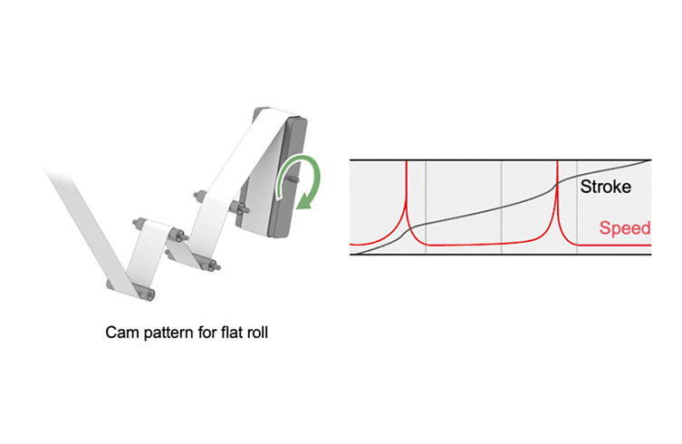
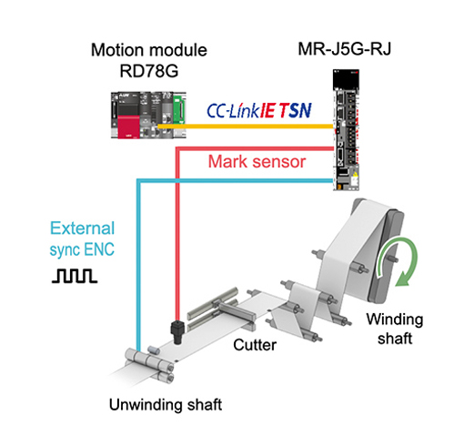
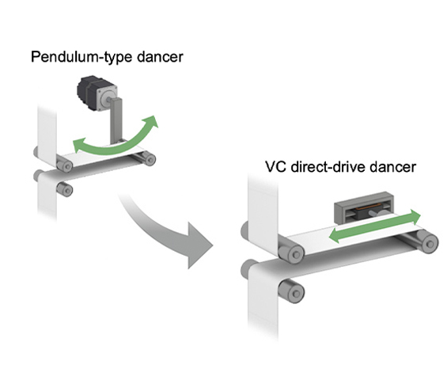

Solutions
Lithium-Ion Battery

Winding machine
- Winding multiturn cam
- High-accuracy cutting
- Dancer VCM drive

Solutions
| Issues | Solutions |
|---|---|
| Stabilizing line for non-round winding shafts | Winding multiturn cam |
| To improvement accuracy for electrode cutting length | High-accuracy cutting |
| To improvement tension stability for sudden acceleration | Dancer VCM drive |
Issues
Stabilizing line for non-round winding shafts
Benefits
Suppress line fluctuations with dedicated winding machine multiturn cam FB.
- Line fluctuations can be suppressed by matching winding circumferential speed to material feed rate using dedicated FB.
Point
- Use teaching to automatically generate correction cam table for matching winding rotation speed to material feed rate.
- The generated cam table enables winding rotation speed correction linked to feed rate.

Issues
To improvement accuracy for electrode cutting length
Benefits
Achieve high-accuracy cutting with amplifier high-accuracy touch probe.
- High-accuracy cutting can be achieved by applying corrections for synchronization encoder error using high-speed touch probe built into servo amplifier.
Point
- 1μs accuracy of MR-J5 amplifier's touch probe enables high-accuracy correction of position detection error.

Product Lineup
Issues
To improvement tension stability for sudden acceleration
Benefits
Improve dancer pressurization accuracy with VCM having low inertia and excellent pressurization accuracy.
- Tension fluctuation suppression and tension accuracy improvement can be achieved by employing VCM (Voice Coil Motor) in the dancer roll pressurization mechanism.
Point
- Dancer mechanism inertia and material pressurization force fluctuations can be reduced.
- Our servo amplifiers can drive VCM motors from Akribis, etc.
